|
◉ Piazzolla Tango Show with Optional Dinner
|
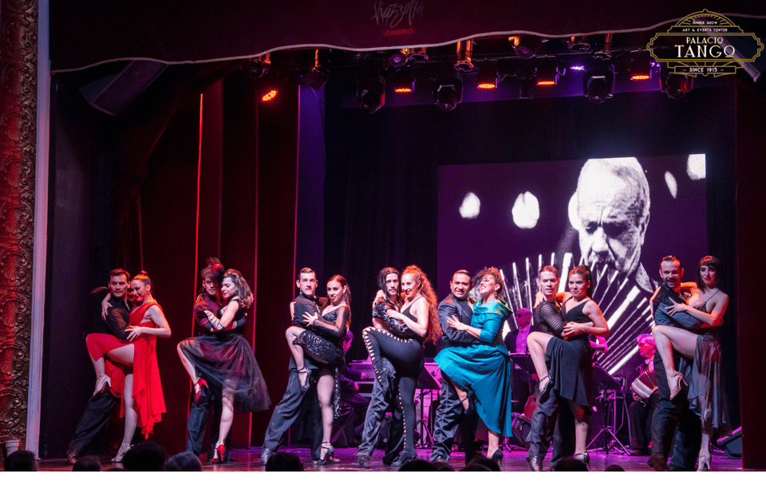
|
- Ticket price: €32/person
- Show duration: 1 hour and 15 minutes.
- Tour guide available: in English
- Admire the impressive Galería Güemes, one of the most luxurious theaters in Buenos Aires.
- 2 drinks (if option selected)
- 3-course dinner with unlimited drinks (if option selected)
- Wheelchair accessible ♿
- Small tour group available
- Enjoy the elegant and complex performance of classic tango
- Dinner options for vegetarians, celiacs, and vegans
- Rating (Get Your Guide): ★★★★⯪ 4,5/5
|
|
|
◉ Palacio Barolo: Night Tour with Wine
|
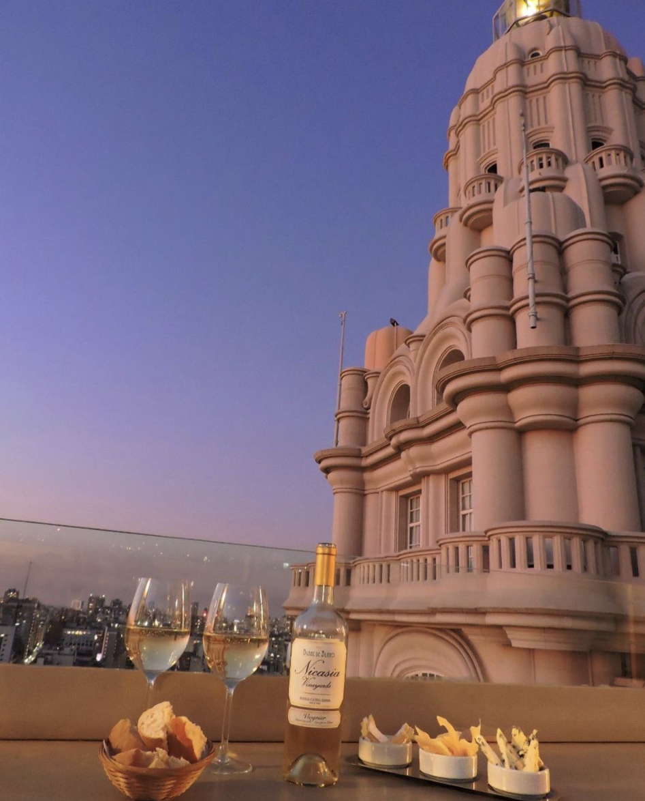
|
- Price: €75/person
- Duration: 1 hour and 30 minutes.
- Tour guide available: in English/Spanish
- Nighttime tour
- Professional guide
- 1 glass of traditional Argentine wine
- Artistic treasures: Discover the rich decorations that highlight the city's grandeur.
- Climb to the large lighthouse at the top of the palace, once the tallest structure of the palace.
- Rating (Get Your Guide): ★★★★⯪ 4,5/5
|
|
|
◉ Buenos Aires by Night: Small Group City Tour
|
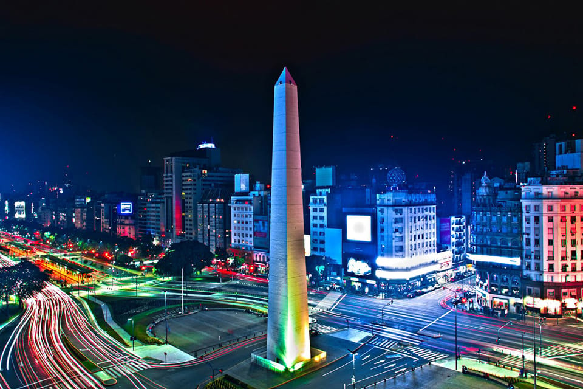
|
- Ticket price: €57/person
- Duration: 3 hours
- 3 pick-up and drop-off points: Retiro, San Nicolás, Monserrat
- Route: Plaza de Mayo, Puerto Madero, Floralis Genérica, Palermo, Buenos Aires
- Tour guide available: in English/Spanish/Portuguese
- Hotel pick-up and drop-off
- Local tour guide
- Explore Buenos Aires at night on a city tour with a local guide
- Walk the narrow cobblestone streets of bohemian San Telmo
- Discover the Puerto Madero neighborhood with its skyscrapers
- See the city's most iconic monuments lit up after dark
- Rating (Get Your Guide): ★★★★★ 4,7/5
|
|
|
◉ Hop-On Hop-Off City Bus Tour with Grayline
|
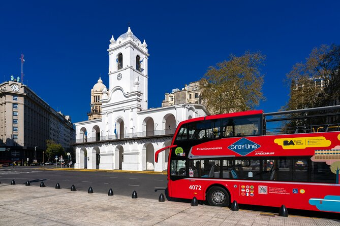
|
- Ticket price: €33/person
- Duration: 24, 48, or 72 hours (since this is a Hop-on Hop-off tour, passengers can participate for as long as they wish)
- 2 starting point options: Av. Santa Fe 808, Av. Pres. Roque Sáenz Peña 728
- Route: National Congress of Argentina, La Bombonera, Caminito, Puerto Madero, Galerías Pacífico, Museum of Latin American Art, Estadio Monumental, Teatro Colón, etc.
- Tour guide available (Audio guide included): in English/ Spanish/ Portuguese/ Japanese/ German/ Chinese/ Italian/ Russian/ French.
- Explore Buenos Aires with open-top double-decker Hop-on Hop-off buses featuring air conditioning and a sunroof
- Benefit from a frequent service running every 25 minutes.
- Enjoy free Wi-Fi on the bus and at bus stops.
- Rating (Get Your Guide): ★★★★⯪ 4,2/5
|
|
|
◉ Argentine Tasting Dinner with Wine Pairings
|
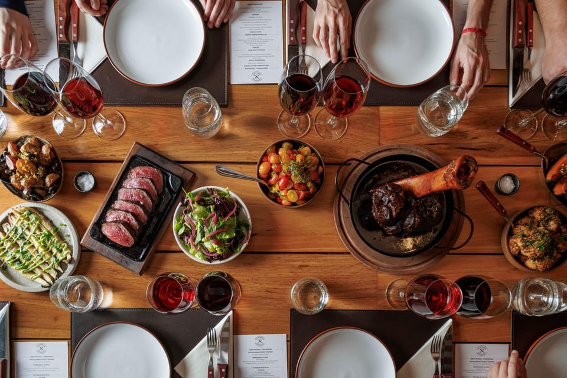
|
- Price: €94/person
- Duration: 3 hours
- Tour guide available: in English
- Wheelchair accessible ♿
- 6-course dinner
- Wine pairing (3 different wines from Argentina)
- Non-alcoholic drinks are also available
- Discover Argentine food and culture
- Not suitable for: Children under 14 years old
- Meeting point: Fitz Roy 2110, Buenos Aires
- Rating (Get Your Guide): ★★★★★ 4,9/5
|
|
|
◉ Visit to La Bombonera Stadium and Museum of Boca Juniors
|
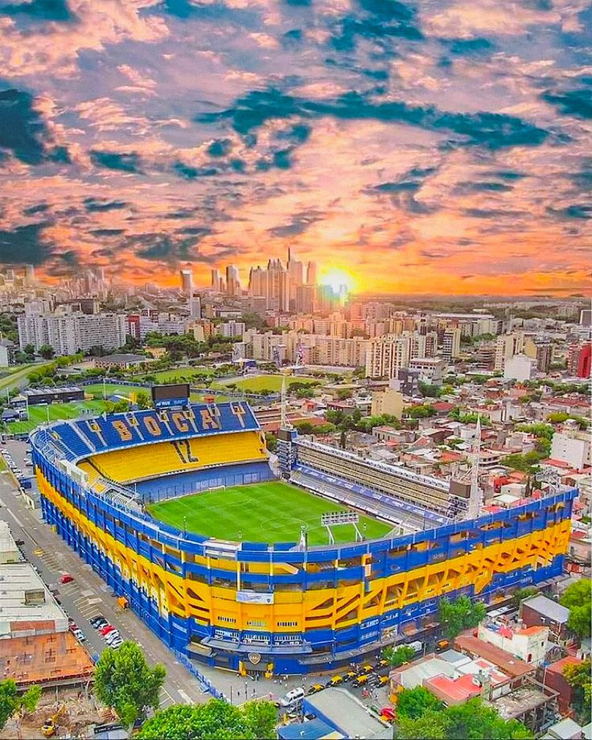
|
- Price: €36/person
- Match duration: 90 minutes
- Tour duration: 2 hours
- Tour guide available: in English/Spanish
- Admission to the Boca Juniors Museum
- Tour of La Bombonera stadium
- Enjoy a museum full of history.
- Visit to the locker rooms and player tunnel
- Access to Maradona's private seats
- 360° audiovisual show in the museum
- Visit to the trophy room with iconic memorabilia
- Food and drinks
- Rating (Get Your Guide): ★★★★⯪ 4,3/5
|
|
|
◉ Visit to Estadio Monumental Stadium and Museum of River Plate
|
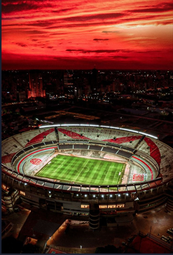
|
- Price: €49/person
- Match duration: 90 minutes
- Tour duration: 1 hour
- Learn about the cultural significance of the team and the historic stadium.
- Enjoy a River Plate home match at El Monumental
- Experience a football match in Argentina alongside locals
- Discover the shaping of Argentina's football heritage
- Explore iconic team trophies, authentic jerseys, and rare memorabilia.
- Admission to the River Plate Museum
- Access to multimedia exhibits featuring trophies, jerseys, and memorabilia
- Detailed screenings on the history of the team and the stadium
- Learn about the cultural significance of the club
- Food and drinks
- Not suitable for: Children under 7 years old and adults over 70 years old
- Rating (Get Your Guide): ★★★★⯪ 4,3/5
|
|
|
◉ Visit to the National Historical Museum
|
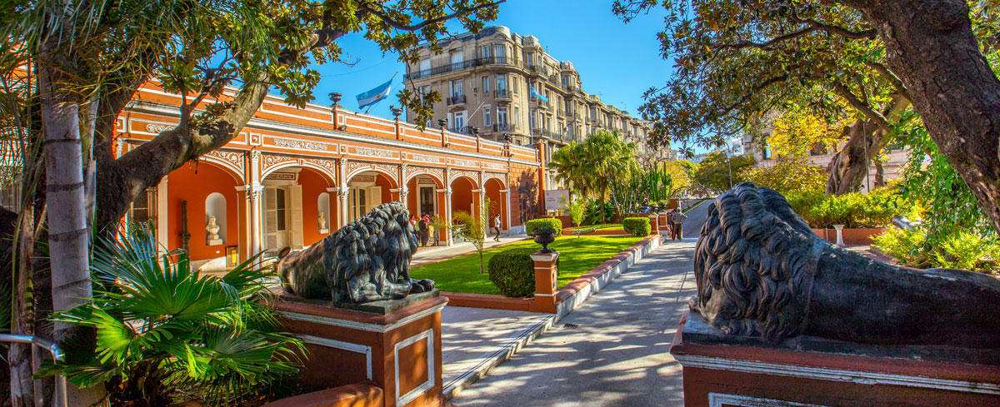
|
- Ticket price: Free (general admission)
- The museum does not include a private walking tour ticket
- Wheelchair accessible ♿
- Opening hours: 11:00 am - 6:00 pm
- Items related to the Argentine War of Independence, the May Revolution, and historic ways of life.
- Rating (Google Maps): ★★★★★ 4,7/5
|
|
|
◉ Visit to the National Museum of Modern Art
|
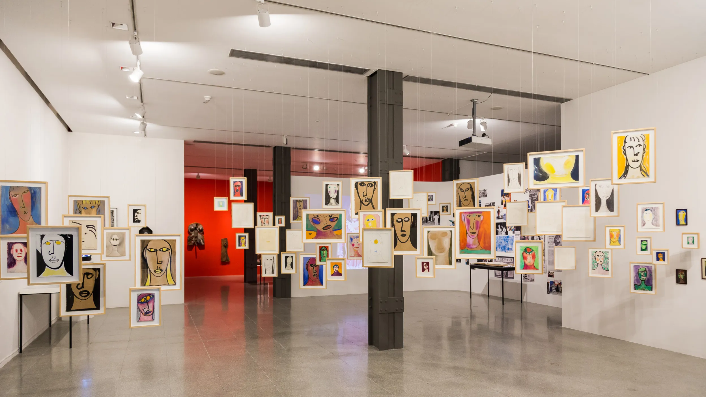
|
- Ticket price: €9/person (general admission)
- Private walking tour price: €360/person
- Wheelchair accessible ♿
- Opening hours: 11:00 am - 7:00 pm
- Contemporary works of Argentine and international artists from the mid-20th century onwards.
- Family Friendly
- Recommended for families with children
- Rating (Google Maps): ★★★★⯪ 4,5/5
|
|
|
◉ Visit to the National Museum of Fine Arts
|
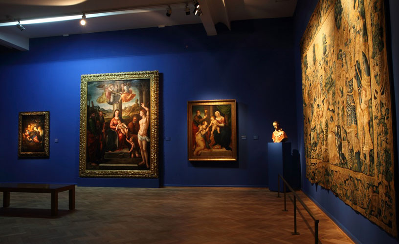
|
- Ticket price: Free (general admission)
- Ticket price (walking tour): €42/person
- Duration: 3 hours
- Opening hours: 11:00 am - 8:00 pm
- Wheelchair accessible ♿
- Wheelchair-accessible parking ♿🅿
- One of the largest public art collections in Latin America
- Rating (Google Maps): ★★★★★ 4,8/5
|
|
|
◉ Walk along Mar del Plata Beach (Playa Varese)
|
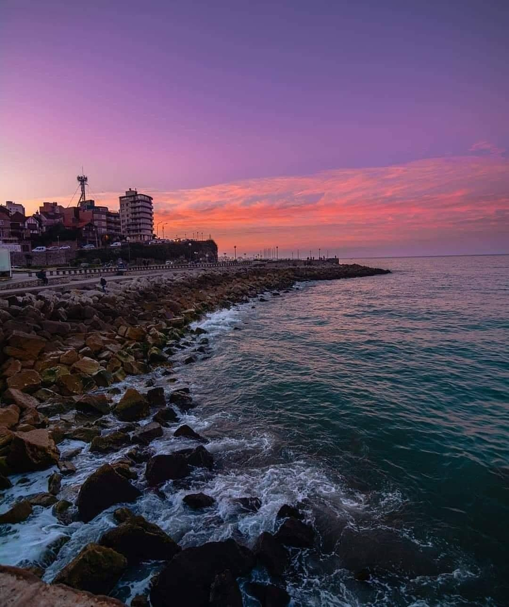
|
- Price: Free (public beach)
- Recommended for families with young children
- Dogs allowed 🐕
- Pier / Jetty
- Sunbathing
- Volleyball and surfing
- Beach accessible by car
- Wheelchair accessible ♿
- Rating (Google Maps): ★★★★⯪ 4,5/5
|
|
|
◉ Walk along Playa de Claromecó Beach
|
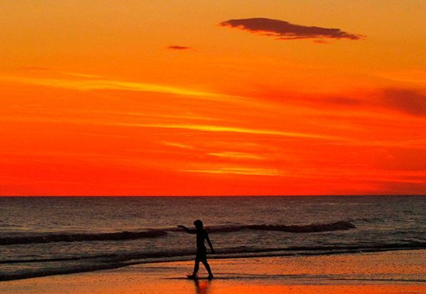
|
- Price: Free (public beach)
- Recommended for families with young children
- Beach accessible by car
- Wheelchair accessible ♿
- Rating (Google Maps): ★★★★★ 4,8/5
|
|